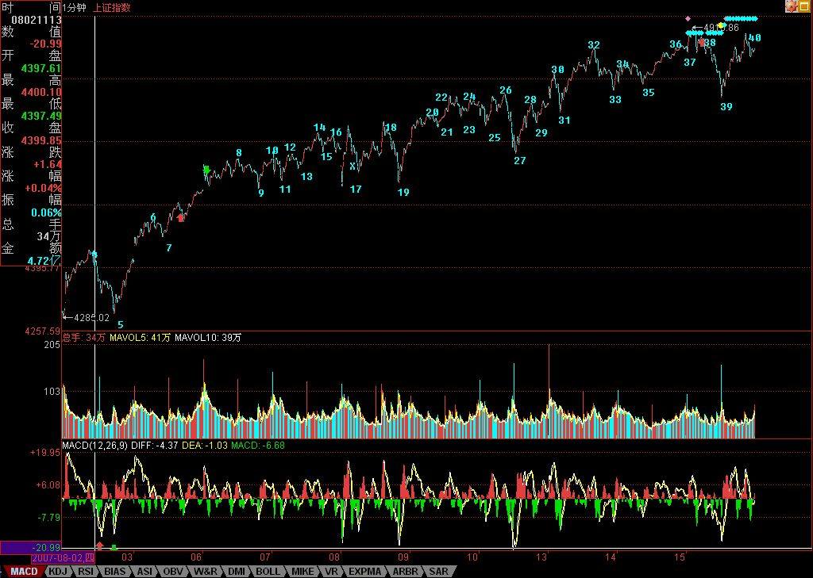

外围因素引发今日震荡
2007/8/15 15:49:33
先解答一个和打坐有关的疑问，本ID说念想把横隔膜以下气息在横隔膜以上送出，这气肯定不是真正呼吸之气。人体结构里，横隔膜以下哪里有什么呼吸之气？那只是一念，以此一念带动那非气之气之真气。
好，说股票。最近，外围市场鬼哭狼嚎的，弄得全世界的鳄鱼都痛哭流涕。中国市场震荡一下，也很应该。技术上，昨天已经很明确说了，现在，或者继续上涨直到出现新的5分钟中枢，或者就在这里形成一个30分钟中枢，除此之外，别无选择。
今天早上冲高后，一个1分钟级别的背驰就出现，整个1分钟的上涨，是下图中的从17-38，两个1分钟的中枢，37是对最后一个1分钟中枢32-35的第三类买点。因此，该上涨极端完美，背驰的MACD辅助判断，看5分钟图更为明显。（各位请自己去看，这里的贴图只有200的额度，本ID不能浪费太多空间。在5分钟图中，看对应1分钟图中的走势去比较力度。）这是一个标准的走势，十分教科书。
后面的震荡十分正常了。现在，从8开始走势的一种划分也自然当下给出了，就是8-17是一个5分钟中枢，然后17-38是一个1分钟级别上涨。而从32开始，一个5分钟中枢的雏形也出现，极短线走势，就看这32开始走势的演化情况。
个股方面，请问002149让各位爽了没有？当然，后面的走势和本ID没关系，本ID只在上周五最高买到43元，然后把其中41附近一部分清单在这里放了几个小时。这股票，为什么还有这么多人抢入，最主要是基本面与成长性。本ID在N个月前，强调过中小版成长股的中长线介价值。后来，本ID也告诉过介入了002121，注意，这股票和002149都和600635有关系，那纯属意外。对中小版，一定要看其成长性，而且要有耐心。 注意，任何股票，都不值得追高，包括如002149这样的。 不过，这都是老皇历了，本ID现在不会再买任何二级市场的股票，只会等待机会把成本不为0的的出掉变为0，然后都去干PE去。至于其他股票，本ID说过的任何股票，本ID都持有着，当然，很多都是0成本的，但本ID都会持有到牛市结束。 这前面说过。本ID再强调一次，本ID对大牛市的信心没变，但目前进入成分股泡沫行情的判断也没变。成分股行情结束后，还至少有两轮行情，分别是成长股与重组股带头，这些游戏，至少玩20年，早着呢。 本ID就多累点，PE多点如002149的，让各位在40元买了也不后悔的好股票。 二级市场，咱相信群众。 今天有事要去谈，先下，再见。
